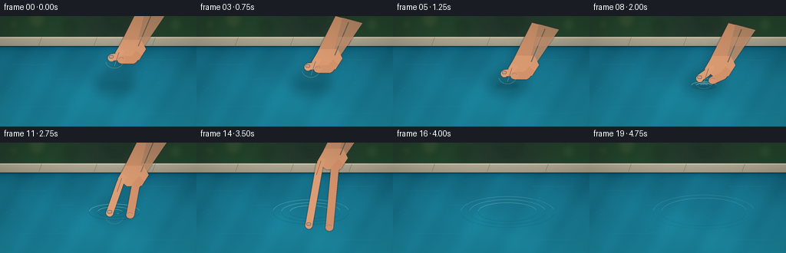
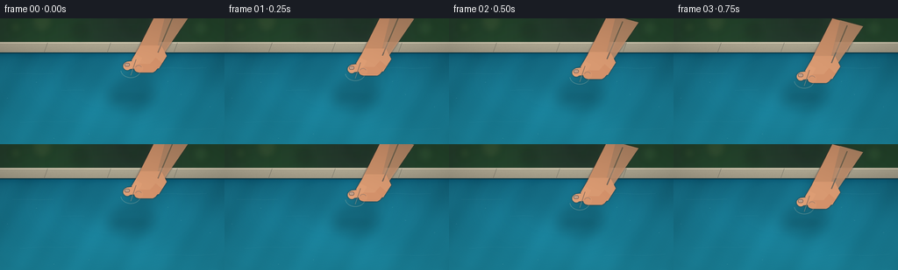
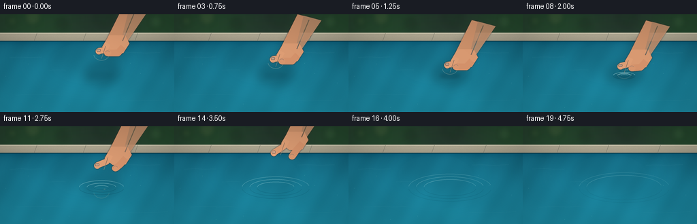

CODING AGENTS AS PIXEL WORLD MODELS
traex/GPT-5.6-Sol · phygen_007
点击播放 · 原生 RGB 像素
逐轮保存的候选
回放视频、检查图与代码变化。
每份候选均可单独播放。实际图片检查记录在下方工具轨迹中。
候选 01播放与检查图
点击播放 · 原生 RGB 像素


展开代码变化
--- 上一保存版本
+++ 本次保存版本
@@ -0,0 +1,306 @@
+from pathlib import Path
+import math
+import numpy as np
+from PIL import Image, ImageDraw, ImageFilter
+import artifact_io
+
+# Procedural, supersampled cinematic illustration of a hand gently placing a stone.
+W, H, N = 256, 144, 20
+SS = 4
+w, h = W * SS, H * SS
+rng = np.random.default_rng(7007)
+
+
+def sc(v):
+ return int(round(v * SS))
+
+
+def pts(seq):
+ return [(sc(x), sc(y)) for x, y in seq]
+
+
+def alpha_composite(base, layer):
+ return Image.alpha_composite(base, layer)
+
+
+def make_background():
+ yy, xx = np.mgrid[0:h, 0:w]
+ Y, X = yy / SS, xx / SS
+ a = np.zeros((h, w, 3), dtype=np.float32)
+
+ # Soft garden beyond the far edge.
+ top = Y < 29
+ garden_noise = rng.normal(0, 1, (h, w))
+ garden_noise = np.asarray(Image.fromarray(np.uint8(np.clip(garden_noise * 25 + 128, 0, 255))).filter(
+ ImageFilter.GaussianBlur(sc(5)))) / 255.0 - .5
+ a[..., 0] = np.where(top, 37 + 18 * garden_noise, 0)
+ a[..., 1] = np.where(top, 64 + 31 * garden_noise + 7 * np.sin(X / 31), 0)
+ a[..., 2] = np.where(top, 45 + 19 * garden_noise, 0)
+
+ # Pale stone pool coping, nearly horizontal with a very slight perspective pitch.
+ coping = (Y >= 27) & (Y < 42)
+ stonegrain = rng.normal(0, 2.3, (h, w))
+ cy = np.clip((Y - 27) / 15, 0, 1)
+ a[..., 0] = np.where(coping, 180 - 25 * cy + stonegrain, a[..., 0])
+ a[..., 1] = np.where(coping, 173 - 25 * cy + stonegrain, a[..., 1])
+ a[..., 2] = np.where(coping, 151 - 22 * cy + stonegrain, a[..., 2])
+
+ # Deep turquoise pool, dark under the far lip and luminous near camera.
+ water = Y >= 39
+ q = np.clip((Y - 39) / 105, 0, 1)
+ caustic = (2.7 * np.sin(X / 12.0 + Y / 21.0) + 1.7 * np.sin(X / 27.0 - Y / 12.0)
+ + 1.2 * np.sin(X / 5.1 + Y / 8.7))
+ fine = rng.normal(0, .75, (h, w))
+ a[..., 0] = np.where(water, 20 + 8 * q + caustic * .35 + fine, a[..., 0])
+ a[..., 1] = np.where(water, 105 + 33 * q + caustic * 1.15 + fine, a[..., 1])
+ a[..., 2] = np.where(water, 129 + 34 * q + caustic * 1.35 + fine, a[..., 2])
+ # Dark contact shadow beneath coping.
+ lip = np.exp(-np.maximum(Y - 39, 0) / 4.0) * (Y >= 39)
+ a[..., 0] -= 14 * lip
+ a[..., 1] -= 20 * lip
+ a[..., 2] -= 15 * lip
+
+ a = np.uint8(np.clip(a, 0, 255))
+ im = Image.fromarray(a, 'RGB').convert('RGBA')
+ d = ImageDraw.Draw(im, 'RGBA')
+ # Coping seams and highlights.
+ d.line(pts([(0, 28), (256, 28)]), fill=(226, 218, 192, 120), width=sc(.7))
+ d.line(pts([(0, 39.5), (256, 39.5)]), fill=(7, 57, 73, 180), width=sc(1.2))
+ for x in (54, 126, 202):
+ d.line(pts([(x, 28), (x - 4, 39)]), fill=(118, 117, 104, 95), width=sc(.55))
+ # Out-of-focus garden bokeh.
+ bokeh = Image.new('RGBA', (w, h), (0, 0, 0, 0)); bd = ImageDraw.Draw(bokeh, 'RGBA')
+ for x, y, r, c in [(18,10,7,(118,145,77,35)),(48,4,12,(190,184,113,24)),
+ (229,11,10,(107,154,94,29)),(91,14,8,(21,38,25,55)),
+ (153,5,15,(19,42,27,40))]:
+ bd.ellipse((sc(x-r),sc(y-r),sc(x+r),sc(y+r)), fill=c)
+ bokeh = bokeh.filter(ImageFilter.GaussianBlur(sc(4)))
+ im = alpha_composite(im, bokeh)
+ return im
+
+BASE = make_background()
+
+# Fixed unobtrusive surface reflections, giving the water a real planar sheen.
+def add_surface_detail(im, frame):
+ layer = Image.new('RGBA', (w, h), (0, 0, 0, 0)); d = ImageDraw.Draw(layer, 'RGBA')
+ phase = frame * .16
+ curves = [
+ [(14,63),(31,62.4),(45,63.2),(61,62.7)],
+ [(181,57),(196,56.4),(214,57.1),(235,56.2)],
+ [(23,119),(48,117.8),(68,118.4),(88,117.3)],
+ [(177,127),(197,126.1),(222,127.0),(246,125.7)],
+ [(70,82),(84,81.4),(96,81.8)],
+ ]
+ for j, line in enumerate(curves):
+ shifted = [(x, y + .28*math.sin(phase+j+x*.05)) for x,y in line]
+ d.line(pts(shifted), fill=(177,231,233,28 if j<2 else 20), width=sc(.55))
+ # tiny sparse flecks, fixed to avoid temporal noise
+ for x,y in [(8,91),(41,73),(206,87),(239,101),(101,132),(191,72),(61,137)]:
+ d.ellipse((sc(x),sc(y),sc(x+.7),sc(y+.32)), fill=(205,247,244,45))
+ return alpha_composite(im, layer)
+
+
+def stone_layer(cx, cy, underwater=0.0, scale=1.0, opacity=255):
+ """Irregular textured river stone, softly shaded from upper left."""
+ layer = Image.new('RGBA', (w, h), (0,0,0,0))
+ # Render in a local high-res patch for mask-based shading.
+ rx, ry = 12.2*scale, 8.3*scale
+ x0, y0 = sc(cx-rx-3), sc(cy-ry-3)
+ x1, y1 = sc(cx+rx+3), sc(cy+ry+3)
+ pw, ph = max(2,x1-x0), max(2,y1-y0)
+ mask = Image.new('L',(pw,ph),0); md=ImageDraw.Draw(mask)
+ poly_rel = [(-.98,-.12),(-.78,-.67),(-.28,-.94),(.35,-.85),(.86,-.48),
+ (1.0,.04),(.72,.68),(.16,.94),(-.45,.82),(-.92,.38)]
+ poly = [(pw/2 + a*rx*SS, ph/2 + b*ry*SS) for a,b in poly_rel]
+ md.polygon(poly, fill=255)
+ mask = mask.filter(ImageFilter.GaussianBlur(max(1,sc(.22))))
+ py, px = np.mgrid[0:ph,0:pw]
+ nx=(px-pw*.5)/(rx*SS); ny=(py-ph*.5)/(ry*SS)
+ radial=np.clip(1-nx*nx-ny*ny,0,1)
+ light=36*radial + 18*(-.45*nx-.65*ny) - 14*np.maximum(ny,0)
+ texture = 4*np.sin(px*.19)+2.3*np.sin(py*.31+px*.07)
+ base=np.zeros((ph,pw,4),dtype=np.uint8)
+ if underwater:
+ # Water absorbs red and reduces contrast with depth.
+ depth = min(1, underwater)
+ colors=np.array([79-24*depth, 91+14*depth, 91+25*depth])
+ contrast=1-.42*depth
+ for k in range(3): base[...,k]=np.clip(colors[k]+(light+texture)*contrast,0,255)
+ else:
+ colors=np.array([100,96,86])
+ for k in range(3): base[...,k]=np.clip(colors[k]+light+texture,0,255)
+ base[...,3]=np.uint8(np.asarray(mask)*opacity/255)
+ rock=Image.fromarray(base,'RGBA')
+ # Subtle edge darkening and mineral details.
+ detail=Image.new('RGBA',(pw,ph),(0,0,0,0)); dd=ImageDraw.Draw(detail,'RGBA')
+ if underwater < .7:
+ dd.line([(pw*.28,ph*.46),(pw*.43,ph*.39),(pw*.57,ph*.47)], fill=(48,47,43,100), width=max(1,sc(.55)))
+ dd.ellipse((pw*.60,ph*.27,pw*.70,ph*.35),fill=(177,174,151,85))
+ dd.arc((pw*.13,ph*.1,pw*.88,ph*.9),8,174,fill=(218,210,183,72),width=max(1,sc(.65)))
+ rock=Image.alpha_composite(rock,detail)
+ if underwater > .25: rock=rock.filter(ImageFilter.GaussianBlur(sc(.18+.18*underwater)))
+ layer.alpha_composite(rock,(x0,y0))
+ return layer
+
+
+def hand_shadow(frame, contact_y):
+ # Soft reflection/shadow projected onto water under the descending hand.
+ layer=Image.new('RGBA',(w,h),(0,0,0,0)); d=ImageDraw.Draw(layer,'RGBA')
+ if frame <= 12:
+ retreat=max(0,frame-7)
+ alpha=max(0,48-retreat*5)
+ d.ellipse((sc(123),sc(73),sc(176),sc(104)),fill=(5,43,54,alpha))
+ d.line(pts([(172,39),(151,89)]),fill=(7,42,51,alpha),width=sc(14))
+ return layer.filter(ImageFilter.GaussianBlur(sc(6)))
+
+
+def draw_hand(frame, stone_cy):
+ """Warm realistic hand: pinches stone, opens, then withdraws upward."""
+ if frame >= 16:
+ return Image.new('RGBA',(w,h),(0,0,0,0))
+ # Up through frame 7 hand follows stone. It then opens and retreats diagonally.
+ if frame <= 7:
+ dy=stone_cy-59
+ lift=0; opening=0
+ else:
+ u=(frame-7)/8.0
+ lift=-48*(u*u*(3-2*u))
+ dy=(82-59)+lift
+ opening=8*min(1,u*2.2)
+ dx=max(0,frame-8)*1.15
+ L=Image.new('RGBA',(w,h),(0,0,0,0))
+ d=ImageDraw.Draw(L,'RGBA')
+ # Forearm comes from upper right, with coherent contours.
+ forearm=[(181+dx,-12+dy),(216+dx,-3+dy),(184+dx,44+dy),(164+dx,47+dy),
+ (158+dx,34+dy)]
+ d.polygon(pts(forearm),fill=(202,143,105,255))
+ # Warm light side and cool shadow side.
+ d.polygon(pts([(190+dx,-10+dy),(216+dx,-3+dy),(184+dx,44+dy),(177+dx,42+dy)]),
+ fill=(225,166,124,185))
+ d.line(pts([(160+dx,34+dy),(164+dx,47+dy),(181+dx,48+dy)]),
+ fill=(135,84,67,130),width=sc(1.1))
+ # Palm/back of hand.
+ palm=[(160+dx,31+dy),(184+dx,31+dy),(190+dx,43+dy),(181+dx,57+dy),
+ (162+dx,58+dy),(150+dx,48+dy)]
+ d.polygon(pts(palm),fill=(216,153,113,255))
+ # Index finger, left of stone: slender and softly rounded.
+ ix=145-opening*.7+dx
+ iy=stone_cy-1 + lift*0.04 if frame>7 else stone_cy-1
+ # Finger line from knuckle toward pinch point.
+ d.line(pts([(158+dx,43+dy),(153+dx,53+dy),(ix,iy-4)]),
+ fill=(221,157,116,255),width=sc(9),joint='curve')
+ d.ellipse((sc(ix-4.5),sc(iy-8),sc(ix+4.5),sc(iy+1)),fill=(224,160,119,255))
+ # Thumb approaches from right.
+ tx=158+opening+dx; ty=stone_cy+1 + (lift*.035 if frame>7 else 0)
+ d.line(pts([(181+dx,48+dy),(173+dx,57+dy),(tx,ty-3)]),
+ fill=(211,145,106,255),width=sc(10),joint='curve')
+ d.ellipse((sc(tx-5),sc(ty-7.5),sc(tx+5),sc(ty+1.5)),fill=(215,149,109,255))
+ # Nails and highlights make the grasp readable.
+ d.rounded_rectangle((sc(ix-3.0),sc(iy-7.1),sc(ix+2.8),sc(iy-3.0)),radius=sc(1.7),
+ fill=(239,190,159,190),outline=(162,101,82,95),width=sc(.45))
+ d.arc((sc(tx-3.7),sc(ty-6.5),sc(tx+3.5),sc(ty-.8)),190,345,
+ fill=(239,185,153,145),width=sc(.65))
+ # Highlight on forearm and finger.
+ d.line(pts([(198+dx,-4+dy),(180+dx,39+dy)]),fill=(245,193,148,80),width=sc(1.3))
+ d.line(pts([(155+dx,47+dy),(149+dx,65+dy)]),fill=(245,192,151,95),width=sc(.75))
+ # Thin ambient occlusion around silhouette, achieved by blurred alpha behind.
+ alpha=L.getchannel('A')
+ outline=Image.new('RGBA',(w,h),(63,45,42,0)); outline.putalpha(alpha.filter(ImageFilter.GaussianBlur(sc(1.0))))
+ return Image.alpha_composite(outline,L)
+
+
+def ripple_layer(frame, center=(149,90)):
+ L=Image.new('RGBA',(w,h),(0,0,0,0)); d=ImageDraw.Draw(L,'RGBA')
+ age=frame-6
+ if age < 0: return L
+ cx,cy=center
+ # A tiny meniscus/dimple first; then three outward-travelling capillary waves.
+ if age <= 3:
+ rr=7+age*1.8
+ box=(sc(cx-rr),sc(cy-rr*.28),sc(cx+rr),sc(cy+rr*.28))
+ d.arc(box,182,356,fill=(203,244,242,145-age*20),width=sc(.8))
+ d.arc((box[0],box[1]+sc(.8),box[2],box[3]+sc(.8)),4,178,
+ fill=(5,70,91,105-age*15),width=sc(.7))
+ # physically expanding rings; later rings begin after the first.
+ for j,delay in enumerate((0,2,4)):
+ aa=age-delay
+ if aa < 0: continue
+ radius=5.0 + 5.6*aa
+ fade=max(0,1-aa/15)
+ if radius>77: continue
+ ry=radius*(.285 + .0007*radius)
+ # Crest highlight and darker trough offset by one pixel.
+ box=(sc(cx-radius),sc(cy-ry),sc(cx+radius),sc(cy+ry))
+ dark=(4,64,83,int(105*fade/(1+j*.22)))
+ light=(187,236,236,int(150*fade/(1+j*.20)))
+ d.arc((box[0],box[1]+sc(.8),box[2],box[3]+sc(.8)),8,176,fill=dark,width=sc(.75))
+ d.arc(box,185,350,fill=light,width=sc(.82))
+ # Broken glints avoid a diagrammatic perfect ellipse.
+ if radius>16:
+ d.arc(box,201,252,fill=(224,251,246,int(120*fade)),width=sc(.55))
+ d.arc(box,300,335,fill=(215,248,246,int(75*fade)),width=sc(.5))
+ return L.filter(ImageFilter.GaussianBlur(sc(.10)))
+
+
+def stone_position(frame):
+ # Slow controlled descent, contact at frame 6, then gravity/buoyancy-driven sinking.
+ above=[59,62.5,66.5,71,75.5,79.5,82.0,83.2]
+ if frame < len(above): return above[frame]
+ # release with low velocity, then a smooth sinking trajectory
+ u=frame-7
+ return 83.2 + 2.25*u + .31*u*u
+
+frames=[]
+for f in range(N):
+ im=BASE.copy()
+ im=add_surface_detail(im,f)
+ cy=stone_position(f)
+ # Hand's broad diffuse water shadow is visible before the subjects.
+ im=alpha_composite(im,hand_shadow(f,cy))
+
+ # Contact shadow/reflection just before touch.
+ if f <= 8:
+ sh=Image.new('RGBA',(w,h),(0,0,0,0)); sd=ImageDraw.Draw(sh,'RGBA')
+ gap=max(0,82-cy)
+ aw=max(25,72-gap*4)
+ sd.ellipse((sc(135-gap*.2),sc(87),sc(163+gap*.2),sc(94)),fill=(4,52,67,int(aw)))
+ sh=sh.filter(ImageFilter.GaussianBlur(sc(2.2+gap*.05)))
+ im=alpha_composite(im,sh)
+
+ if f <= 7:
+ # Stone remains dry/above water in the visible pinch; contact begins at 6.
+ im=alpha_composite(im,stone_layer(149,cy,underwater=0,scale=1.0))
+ im=alpha_composite(im,ripple_layer(f))
+ im=alpha_composite(im,draw_hand(f,cy))
+ else:
+ depth=max(0,(cy-84)/43)
+ # submerged stone: lower contrast and opacity with increasing depth
+ op=int(238-75*min(depth,1))
+ im=alpha_composite(im,stone_layer(149,cy,underwater=min(1,.25+depth),scale=1.0,opacity=op))
+ # translucent aqua veil above the rock sells refraction.
+ veil=Image.new('RGBA',(w,h),(0,0,0,0)); vd=ImageDraw.Draw(veil,'RGBA')
+ rr=12.5
+ vd.ellipse((sc(149-rr),sc(cy-8.5),sc(149+rr),sc(cy+8.5)),
+ fill=(26,137,158,int(18+35*min(depth,1))))
+ im=alpha_composite(im,veil)
+ im=alpha_composite(im,ripple_layer(f))
+ im=alpha_composite(im,draw_hand(f,cy))
+
+ # Tiny contact sparkle only, no splash: emphasizes "gently".
+ if 6 <= f <= 9:
+ gl=Image.new('RGBA',(w,h),(0,0,0,0)); gd=ImageDraw.Draw(gl,'RGBA')
+ a=150-28*(f-6)
+ gd.arc((sc(140),sc(87),sc(158),sc(93)),195,345,fill=(225,253,249,a),width=sc(.65))
+ im=alpha_composite(im,gl)
+
+ # Mild cinematic vignette and final downsample.
+ arr=np.asarray(im.convert('RGB')).astype(np.float32)
+ yy,xx=np.mgrid[0:h,0:w]; nx=(xx-w/2)/(w/2); ny=(yy-h/2)/(h/2)
+ vig=np.clip(1-.105*np.maximum(0,nx*nx+ny*ny-.18),.84,1)[...,None]
+ arr=np.clip(arr*vig,0,255).astype(np.uint8)
+ out=Image.fromarray(arr,'RGB').resize((W,H),Image.Resampling.LANCZOS)
+ frames.append(np.asarray(out,dtype=np.uint8))
+
+frames=np.stack(frames,axis=0)
+artifact_io.save(frames,Path(__file__).resolve().parent)
+print(f"saved {frames.shape} {frames.dtype}")
候选 02播放与检查图
点击播放 · 原生 RGB 像素

展开代码变化
--- 上一保存版本
+++ 本次保存版本
@@ -185,13 +185,15 @@
d.polygon(pts(palm),fill=(216,153,113,255))
# Index finger, left of stone: slender and softly rounded.
ix=145-opening*.7+dx
- iy=stone_cy-1 + lift*0.04 if frame>7 else stone_cy-1
+ # After release, fingertips leave the stone and travel upward with the palm.
+ # They must not keep following the now-sinking rock.
+ iy=82 + lift*.85 if frame>7 else stone_cy-1
# Finger line from knuckle toward pinch point.
d.line(pts([(158+dx,43+dy),(153+dx,53+dy),(ix,iy-4)]),
fill=(221,157,116,255),width=sc(9),joint='curve')
d.ellipse((sc(ix-4.5),sc(iy-8),sc(ix+4.5),sc(iy+1)),fill=(224,160,119,255))
# Thumb approaches from right.
- tx=158+opening+dx; ty=stone_cy+1 + (lift*.035 if frame>7 else 0)
+ tx=158+opening+dx; ty=84 + lift*.80 if frame>7 else stone_cy+1
d.line(pts([(181+dx,48+dy),(173+dx,57+dy),(tx,ty-3)]),
fill=(211,145,106,255),width=sc(10),joint='curve')
d.ellipse((sc(tx-5),sc(ty-7.5),sc(tx+5),sc(ty+1.5)),fill=(215,149,109,255))
可观测工具轨迹
实际执行的命令与返回图片。
命令 1exit 0
/bin/bash -lc "cat prompt.txt && printf '\\n---RULES---\\n' && cat GENERATION_RULES.md && printf '\\n---SPEC---\\n' && cat task_spec.json"
命令 2exit 0
/bin/bash -lc "find . -maxdepth 2 -type f -printf '%p\\n' | sort && printf '\\nTOOLS\\n' && command -v blender || true && command -v ffmpeg || true && command -v python3 || true"
命令 3exit 0
/bin/bash -lc 'cat artifact_io.py'
命令 4exit 0
/bin/bash -lc "cat > generate.py <<'PY'
from pathlib import Path
import math
import numpy as np
from PIL import Image, ImageDraw, ImageFilter
import artifact_io
# Procedural, supersampled cinematic illustration of a hand gently placing a stone.
W, H, N = 256, 144, 20
SS = 4
w, h = W * SS, H * SS
rng = np.random.default_rng(7007)
def sc(v):
return int(round(v * SS))
def pts(seq):
return [(sc(x), sc(y)) for x, y in seq]
def alpha_composite(base, layer):
return Image.alpha_composite(base, layer)
def make_background():
yy, xx = np.mgrid[0:h, 0:w]
Y, X = yy / SS, xx / SS
a = np.zeros((h, w, 3), dtype=np.float32)
# Soft garden beyond the far edge.
top = Y < 29
garden_noise = rng.normal(0, 1, (h, w))
garden_noise = np.asarray(Image.fromarray(np.uint8(np.clip(garden_noise * 25 + 128, 0, 255))).filter(
ImageFilter.GaussianBlur(sc(5)))) / 255.0 - .5
a[..., 0] = np.where(top, 37 + 18 * garden_noise, 0)
a[..., 1] = np.where(top, 64 + 31 * garden_noise + 7 * np.sin(X / 31), 0)
a[..., 2] = np.where(top, 45 + 19 * garden_noise, 0)
# Pale stone pool coping, nearly horizontal with a very slight perspective pitch.
coping = (Y >= 27) & (Y < 42)
stonegrain = rng.normal(0, 2.3, (h, w))
cy = np.clip((Y - 27) / 15, 0, 1)
a[..., 0] = np.where(coping, 180 - 25 * cy + stonegrain, a[..., 0])
a[..., 1] = np.where(coping, 173 - 25 * cy + stonegrain, a[..., 1])
a[..., 2] = np.where(coping, 151 - 22 * cy + stonegrain, a[..., 2])
# Deep turquoise pool, dark under the far lip and luminous near camera.
water = Y >= 39
q = np.clip((Y - 39) / 105, 0, 1)
caustic = (2.7 * np.sin(X / 12.0 + Y / 21.0) + 1.7 * np.sin(X / 27.0 - Y / 12.0)
+ 1.2 * np.sin(X / 5.1 + Y / 8.7))
fine = rng.normal(0, .75, (h, w))
a[..., 0] = np.where(water, 20 + 8 * q + caustic * .35 + fine, a[..., 0])
a[..., 1] = np.where(water, 105 + 33 * q + caustic * 1.15 + fine, a[..., 1])
a[..., 2] = np.where(water, 129 + 34 * q + caustic * 1.35 + fine, a[..., 2])
# Dark contact shadow beneath coping.
lip = np.exp(-np.maximum(Y - 39, 0) / 4.0) * (Y >= 39)
a[..., 0] -= 14 * lip
a[..., 1] -= 20 * lip
a[..., 2] -= 15 * lip
a = np.uint8(np.clip(a, 0, 255))
im = Image.fromarray(a, 'RGB').convert('RGBA')
d = ImageDraw.Draw(im, 'RGBA')
# Coping seams and highlights.
d.line(pts([(0, 28), (256, 28)]), fill=(226, 218, 192, 120), width=sc(.7))
d.line(pts([(0, 39.5), (256, 39.5)]), fill=(7, 57, 73, 180), width=sc(1.2))
for x in (54, 126, 202):
d.line(pts([(x, 28), (x - 4, 39)]), fill=(118, 117, 104, 95), width=sc(.55))
# Out-of-focus garden bokeh.
bokeh = Image.new('RGBA', (w, h), (0, 0, 0, 0)); bd = ImageDraw.Draw(bokeh, 'RGBA')
for x, y, r, c in [(18,10,7,(118,145,77,35)),(48,4,12,(190,184,113,24)),
(229,11,10,(107,154,94,29)),(91,14,8,(21,38,25,55)),
(153,5,15,(19,42,27,40))]:
bd.ellipse((sc(x-r),sc(y-r),sc(x+r),sc(y+r)), fill=c)
bokeh = bokeh.filter(ImageFilter.GaussianBlur(sc(4)))
im = alpha_composite(im, bokeh)
return im
BASE = make_background()
# Fixed unobtrusive surface reflections, giving the water a real planar sheen.
def add_surface_detail(im, frame):
layer = Image.new('RGBA', (w, h), (0, 0, 0, 0)); d = ImageDraw.Draw(layer, 'RGBA')
phase = frame * .16
curves = [
[(14,63),(31,62.4),(45,63.2),(61,62.7)],
[(181,57),(196,56.4),(214,57.1),(235,56.2)],
[(23,119),(48,117.8),(68,118.4),(88,117.3)],
[(177,127),(197,126.1),(222,127.0),(246,125.7)],
[(70,82),(84,81.4),(96,81.8)],
]
for j, line in enumerate(curves):
shifted = [(x, y + .28*math.sin(phase+j+x*.05)) for x,y in line]
d.line(pts(shifted), fill=(177,231,233,28 if j<2 else 20), width=sc(.55))
# tiny sparse flecks, fixed to avoid temporal noise
for x,y in [(8,91),(41,73),(206,87),(239,101),(101,132),(191,72),(61,137)]:
d.ellipse((sc(x),sc(y),sc(x+.7),sc(y+.32)), fill=(205,247,244,45))
return alpha_composite(im, layer)
def stone_layer(cx, cy, underwater=0.0, scale=1.0, opacity=255):
\"\"\"Irregular textured river stone, softly shaded from upper left.\"\"\"
layer = Image.new('RGBA', (w, h), (0,0,0,0))
# Render in a local high-res patch for mask-based shading.
rx, ry = 12.2*scale, 8.3*scale
x0, y0 = sc(cx-rx-3), sc(cy-ry-3)
x1, y1 = sc(cx+rx+3), sc(cy+ry+3)
pw, ph = max(2,x1-x0), max(2,y1-y0)
mask = Image.new('L',(pw,ph),0); md=ImageDraw.Draw(mask)
poly_rel = [(-.98,-.12),(-.78,-.67),(-.28,-.94),(.35,-.85),(.86,-.48),
(1.0,.04),(.72,.68),(.16,.94),(-.45,.82),(-.92,.38)]
poly = [(pw/2 + a*rx*SS, ph/2 + b*ry*SS) for a,b in poly_rel]
md.polygon(poly, fill=255)
mask = mask.filter(ImageFilter.GaussianBlur(max(1,sc(.22))))
py, px = np.mgrid[0:ph,0:pw]
nx=(px-pw*.5)/(rx*SS); ny=(py-ph*.5)/(ry*SS)
radial=np.clip(1-nx*nx-ny*ny,0,1)
light=36*radial + 18*(-.45*nx-.65*ny) - 14*np.maximum(ny,0)
texture = 4*np.sin(px*.19)+2.3*np.sin(py*.31+px*.07)
base=np.zeros((ph,pw,4),dtype=np.uint8)
if underwater:
# Water absorbs red and reduces contrast with depth.
depth = min(1, underwater)
colors=np.array([79-24*depth, 91+14*depth, 91+25*depth])
contrast=1-.42*depth
for k in range(3): base[...,k]=np.clip(colors[k]+(light+texture)*contrast,0,255)
else:
colors=np.array([100,96,86])
for k in range(3): base[...,k]=np.clip(colors[k]+light+texture,0,255)
base[...,3]=np.uint8(np.asarray(mask)*opacity/255)
rock=Image.fromarray(base,'RGBA')
# Subtle edge darkening and mineral details.
detail=Image.new('RGBA',(pw,ph),(0,0,0,0)); dd=ImageDraw.Draw(detail,'RGBA')
if underwater < .7:
dd.line([(pw*.28,ph*.46),(pw*.43,ph*.39),(pw*.57,ph*.47)], fill=(48,47,43,100), width=max(1,sc(.55)))
dd.ellipse((pw*.60,ph*.27,pw*.70,ph*.35),fill=(177,174,151,85))
dd.arc((pw*.13,ph*.1,pw*.88,ph*.9),8,174,fill=(218,210,183,72),width=max(1,sc(.65)))
rock=Image.alpha_composite(rock,detail)
if underwater > .25: rock=rock.filter(ImageFilter.GaussianBlur(sc(.18+.18*underwater)))
layer.alpha_composite(rock,(x0,y0))
return layer
def hand_shadow(frame, contact_y):
# Soft reflection/shadow projected onto water under the descending hand.
layer=Image.new('RGBA',(w,h),(0,0,0,0)); d=ImageDraw.Draw(layer,'RGBA')
if frame <= 12:
retreat=max(0,frame-7)
alpha=max(0,48-retreat*5)
d.ellipse((sc(123),sc(73),sc(176),sc(104)),fill=(5,43,54,alpha))
d.line(pts([(172,39),(151,89)]),fill=(7,42,51,alpha),width=sc(14))
return layer.filter(ImageFilter.GaussianBlur(sc(6)))
def draw_hand(frame, stone_cy):
\"\"\"Warm realistic hand: pinches stone, opens, then withdraws upward.\"\"\"
if frame >= 16:
return Image.new('RGBA',(w,h),(0,0,0,0))
# Up through frame 7 hand follows stone. It then opens and retreats diagonally.
if frame <= 7:
dy=stone_cy-59
lift=0; opening=0
else:
u=(frame-7)/8.0
lift=-48*(u*u*(3-2*u))
dy=(82-59)+lift
opening=8*min(1,u*2.2)
dx=max(0,frame-8)*1.15
L=Image.new('RGBA',(w,h),(0,0,0,0))
d=ImageDraw.Draw(L,'RGBA')
# Forearm comes from upper right, with coherent contours.
forearm=[(181+dx,-12+dy),(216+dx,-3+dy),(184+dx,44+dy),(164+dx,47+dy),
(158+dx,34+dy)]
d.polygon(pts(forearm),fill=(202,143,105,255))
# Warm light side and cool shadow side.
d.polygon(pts([(190+dx,-10+dy),(216+dx,-3+dy),(184+dx,44+dy),(177+dx,42+dy)]),
fill=(225,166,124,185))
d.line(pts([(160+dx,34+dy),(164+dx,47+dy),(181+dx,48+dy)]),
fill=(135,84,67,130),width=sc(1.1))
# Palm/back of hand.
palm=[(160+dx,31+dy),(184+dx,31+dy),(190+dx,43+dy),(181+dx,57+dy),
(162+dx,58+dy),(150+dx,48+dy)]
d.polygon(pts(palm),fill=(216,153,113,255))
# Index finger, left of stone: slender and softly rounded.
ix=145-opening*.7+dx
iy=stone_cy-1 + lift*0.04 if frame>7 else stone_cy-1
# Finger line from knuckle toward pinch point.
d.line(pts([(158+dx,43+dy),(153+dx,53+dy),(ix,iy-4)]),
fill=(221,157,116,255),width=sc(9),joint='curve')
d.ellipse((sc(ix-4.5),sc(iy-8),sc(ix+4.5),sc(iy+1)),fill=(224,160,119,255))
# Thumb approaches from right.
tx=158+opening+dx; ty=stone_cy+1 + (lift*.035 if frame>7 else 0)
d.line(pts([(181+dx,48+dy),(173+dx,57+dy),(tx,ty-3)]),
fill=(211,145,106,255),width=sc(10),joint='curve')
d.ellipse((sc(tx-5),sc(ty-7.5),sc(tx+5),sc(ty+1.5)),fill=(215,149,109,255))
# Nails and highlights make the grasp readable.
d.rounded_rectangle((sc(ix-3.0),sc(iy-7.1),sc(ix+2.8),sc(iy-3.0)),radius=sc(1.7),
fill=(239,190,159,190),outline=(162,101,82,95),width=sc(.45))
d.arc((sc(tx-3.7),sc(ty-6.5),sc(tx+3.5),sc(ty-.8)),190,345,
fill=(239,185,153,145),width=sc(.65))
# Highlight on forearm and finger.
d.line(pts([(198+dx,-4+dy),(180+dx,39+dy)]),fill=(245,193,148,80),width=sc(1.3))
d.line(pts([(155+dx,47+dy),(149+dx,65+dy)]),fill=(245,192,151,95),width=sc(.75))
# Thin ambient occlusion around silhouette, achieved by blurred alpha behind.
alpha=L.getchannel('A')
outline=Image.new('RGBA',(w,h),(63,45,42,0)); outline.putalpha(alpha.filter(ImageFilter.GaussianBlur(sc(1.0))))
return Image.alpha_composite(outline,L)
def ripple_layer(frame, center=(149,90)):
L=Image.new('RGBA',(w,h),(0,0,0,0)); d=ImageDraw.Draw(L,'RGBA')
age=frame-6
if age < 0: return L
cx,cy=center
# A tiny meniscus/dimple first; then three outward-travelling capillary waves.
if age <= 3:
rr=7+age*1.8
box=(sc(cx-rr),sc(cy-rr*.28),sc(cx+rr),sc(cy+rr*.28))
d.arc(box,182,356,fill=(203,244,242,145-age*20),width=sc(.8))
d.arc((box[0],box[1]+sc(.8),box[2],box[3]+sc(.8)),4,178,
fill=(5,70,91,105-age*15),width=sc(.7))
# physically expanding rings; later rings begin after the first.
for j,delay in enumerate((0,2,4)):
aa=age-delay
if aa < 0: continue
radius=5.0 + 5.6*aa
fade=max(0,1-aa/15)
if radius>77: continue
ry=radius*(.285 + .0007*radius)
# Crest highlight and darker trough offset by one pixel.
box=(sc(cx-radius),sc(cy-ry),sc(cx+radius),sc(cy+ry))
dark=(4,64,83,int(105*fade/(1+j*.22)))
light=(187,236,236,int(150*fade/(1+j*.20)))
d.arc((box[0],box[1]+sc(.8),box[2],box[3]+sc(.8)),8,176,fill=dark,width=sc(.75))
d.arc(box,185,350,fill=light,width=sc(.82))
# Broken glints avoid a diagrammatic perfect ellipse.
if radius>16:
d.arc(box,201,252,fill=(224,251,246,int(120*fade)),width=sc(.55))
d.arc(box,300,335,fill=(215,248,246,int(75*fade)),width=sc(.5))
return L.filter(ImageFilter.GaussianBlur(sc(.10)))
def stone_position(frame):
# Slow controlled descent, contact at frame 6, then gravity/buoyancy-driven sinking.
above=[59,62.5,66.5,71,75.5,79.5,82.0,83.2]
if frame < len(above): return above[frame]
# release with low velocity, then a smooth sinking trajectory
u=frame-7
return 83.2 + 2.25*u + .31*u*u
frames=[]
for f in range(N):
im=BASE.copy()
im=add_surface_detail(im,f)
cy=stone_position(f)
# Hand's broad diffuse water shadow is visible before the subjects.
im=alpha_composite(im,hand_shadow(f,cy))
# Contact shadow/reflection just before touch.
if f <= 8:
sh=Image.new('RGBA',(w,h),(0,0,0,0)); sd=ImageDraw.Draw(sh,'RGBA')
gap=max(0,82-cy)
aw=max(25,72-gap*4)
sd.ellipse((sc(135-gap*.2),sc(87),sc(163+gap*.2),sc(94)),fill=(4,52,67,int(aw)))
sh=sh.filter(ImageFilter.GaussianBlur(sc(2.2+gap*.05)))
im=alpha_composite(im,sh)
if f <= 7:
# Stone remains dry/above water in the visible pinch; contact begins at 6.
im=alpha_composite(im,stone_layer(149,cy,underwater=0,scale=1.0))
im=alpha_composite(im,ripple_layer(f))
im=alpha_composite(im,draw_hand(f,cy))
else:
depth=max(0,(cy-84)/43)
# submerged stone: lower contrast and opacity with increasing depth
op=int(238-75*min(depth,1))
im=alpha_composite(im,stone_layer(149,cy,underwater=min(1,.25+depth),scale=1.0,opacity=op))
# translucent aqua veil above the rock sells refraction.
veil=Image.new('RGBA',(w,h),(0,0,0,0)); vd=ImageDraw.Draw(veil,'RGBA')
rr=12.5
vd.ellipse((sc(149-rr),sc(cy-8.5),sc(149+rr),sc(cy+8.5)),
fill=(26,137,158,int(18+35*min(depth,1))))
im=alpha_composite(im,veil)
im=alpha_composite(im,ripple_layer(f))
im=alpha_composite(im,draw_hand(f,cy))
# Tiny contact sparkle only, no splash: emphasizes \"gently\".
if 6 <= f <= 9:
gl=Image.new('RGBA',(w,h),(0,0,0,0)); gd=ImageDraw.Draw(gl,'RGBA')
a=150-28*(f-6)
gd.arc((sc(140),sc(87),sc(158),sc(93)),195,345,fill=(225,253,249,a),width=sc(.65))
im=alpha_composite(im,gl)
# Mild cinematic vignette and final downsample.
arr=np.asarray(im.convert('RGB')).astype(np.float32)
yy,xx=np.mgrid[0:h,0:w]; nx=(xx-w/2)/(w/2); ny=(yy-h/2)/(h/2)
vig=np.clip(1-.105*np.maximum(0,nx*nx+ny*ny-.18),.84,1)[...,None]
arr=np.clip(arr*vig,0,255).astype(np.uint8)
out=Image.fromarray(arr,'RGB').resize((W,H),Image.Resampling.LANCZOS)
frames.append(np.asarray(out,dtype=np.uint8))
frames=np.stack(frames,axis=0)
artifact_io.save(frames,Path(__file__).resolve().parent)
print(f\"saved {frames.shape} {frames.dtype}\")
PY
python3 generate.py
ls -lh pixels.npz inspection.png frames/00.png frames/19.png"命令 5exit 0
/bin/bash -lc "python3 generate.py && python3 - <<'PY'
import numpy as np
from PIL import Image
from pathlib import Path
x=np.load('pixels.npz')['pixels']
print('packed tensor:', x.shape, x.dtype, 'frames png:',len(list(Path('frames').glob('*.png'))))
# temporal change and brightness sanity
f=np.stack([np.array(Image.open(f'frames/{i:02d}.png')) for i in range(20)])
print('frame array:',f.shape,f.dtype,'range',f.min(),f.max())
print('mean abs temporal deltas:',np.round(np.abs(np.diff(f.astype(float),axis=0)).mean((1,2,3)),2).tolist())
PY"保存候选 2 份；完成命令 5 次；可验证图片返回 0 张。原始 API 响应与完整日志保留在本地。